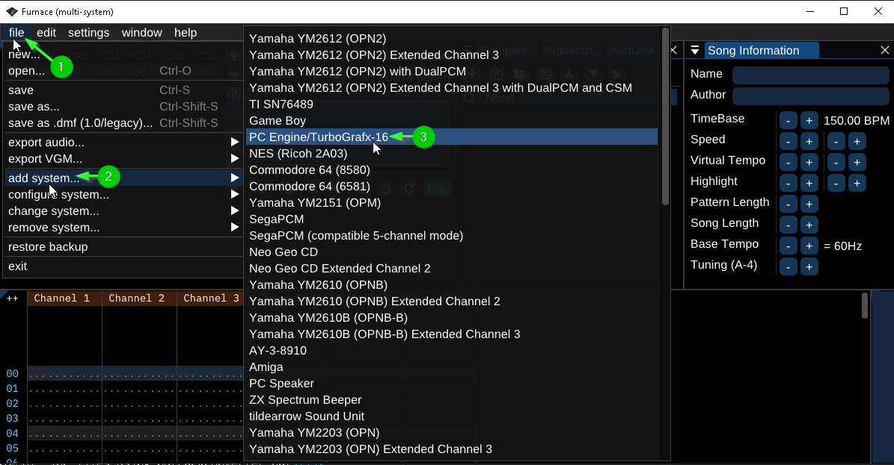
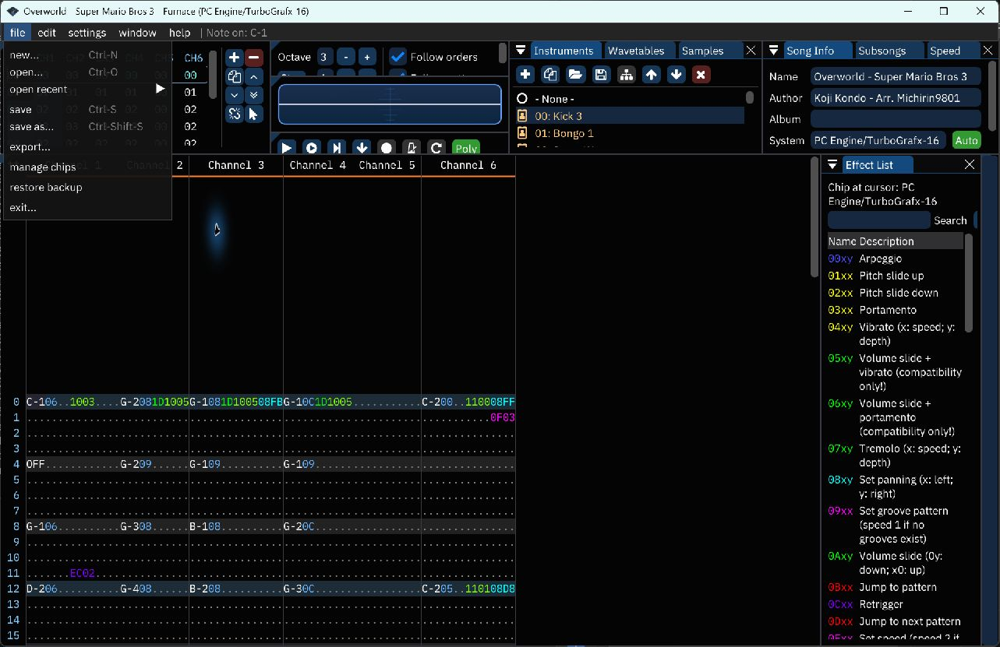
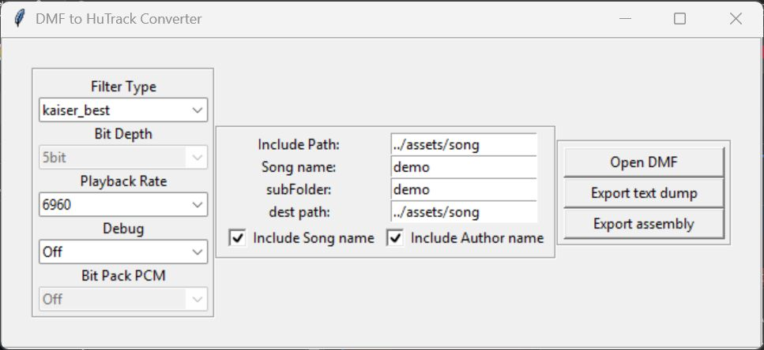
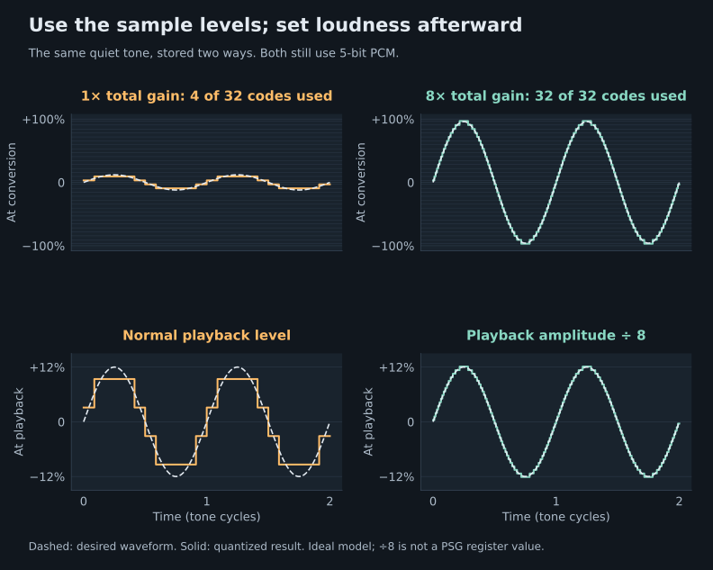
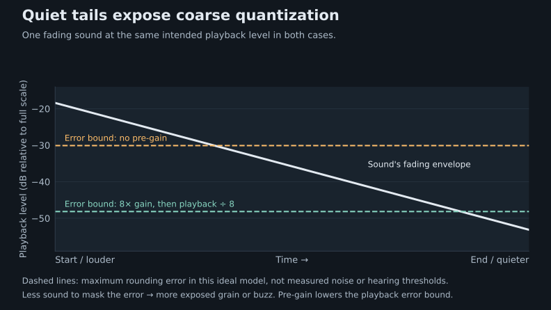
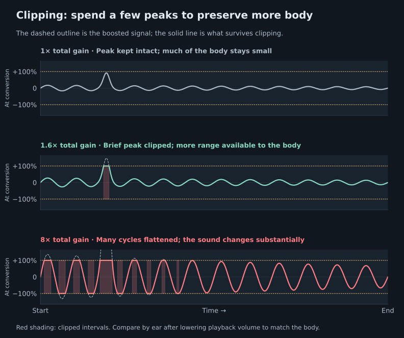
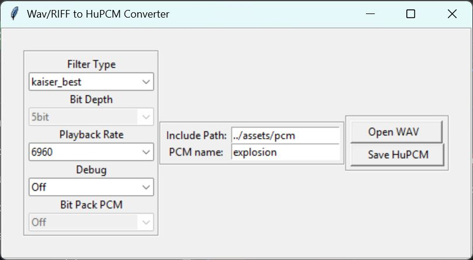
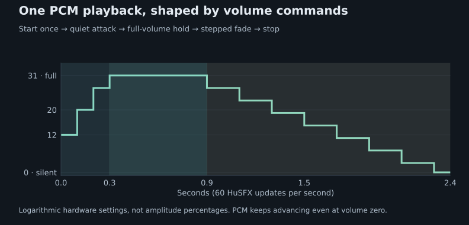

Requirements
HuTrack, by Turboxray, provides a DMF converter and a HuC6280 playback engine for the PC Engine / TurboGrafx-16. Both C compilers use the same music engine and converted assets; their startup hooks, ROM allocation and library integration differ.
- A recent 4.x toolchain distribution, including the matching compiler, PCEAS and headers. Choose
huc.exewithinclude/huc, orhucc.exewithinclude/hucc. - This HuTrack checkout. Its
libdirectory belongs on the include path. - Python 3.12 or newer with
numpy,resampyand Tkinter for conversion. The converters import Tkinter even in command-line mode. - An emulator or console to check the resulting ROM. Furnace is needed only for editing/exporting songs; standalone WAV effects do not need Furnace or a DMF file.
The commands below are Windows Command Prompt / .bat syntax. Set these paths to your installations in the same command prompt:
set "HUC_HOME=C:\huc"
set "HUTRACK_HOME=C:\Projects\PCE_DEV\HuTrack"
python -m pip install -r "%HUTRACK_HOME%\requirements.txt"
python -c "import numpy, resampy, tkinter"Keep the compiler, assembler and include directory from the same toolchain build. These instructions cover current HuCard integration; CD overlays need their own memory and interrupt integration.
Project layout
Use one of the following configurations. Keep its customization files beside main.c, so the assembler finds them before the stock library files. There is no need to modify your installed toolchain.
game/
music/
my_song.dmf
assets/
song/
demo/ generated .inc bundle
pcm/ optional converted WAV files
main/
main.c
build.bat
HuC: lib_exclude.asm, libslot1.asm, sound.inc
HuCC: hucc-config.inc, hucc-sound.inc, hucc-final-extra.asm- Export a single-system PC Engine song as legacy DMF.
- Run the converter from
game/mainand retain its whole output bundle. - Install the configuration for your compiler, include the C interface and song, then build.
- Call
HuTrack_Init(), register songs withHuTrackEngine_QueueSong(), and start a registered song by index.
Create and export music
The playback reference is official Furnace 0.6.8.3's legacy-DMF support. HuTrack keeps period-based slides, with its original fast approximations for notes, vibrato and E5 fine tuning. It does not apply an extra noise-volume correction. See the compatibility notes and complete effect matrix for deliberate differences and format limits.
- In Furnace, use File → New and select PC Engine / TurboGrafx-16, or open an existing PC Engine DMF. Keep one six-channel PC Engine system.
- Compose/edit the song and save a
.furworking copy if desired. - Choose File → Export…, open the DMF tab, and select 1.0/legacy (0.12). Click Export, then save the conversion input as
game/music/my_song.dmf. Review Furnace's export warnings: native Furnace features can be lost in DMF. - Reopen the exported DMF in the reference release and listen to it before comparing with HuTrack. This includes Furnace's DMF import behavior in the comparison.
For these default VBlank setups, use the normal approximately 60 Hz music tick rate. PAL and custom-Hz songs require a custom scheduler; conversion does not retime them automatically.


Export legacy DMF: illustrated steps
These screenshots show the official Furnace 0.6.8.3 release with a PC Engine song loaded. The legacy choice is in the Export dialog, before the file picker.




Newer Furnace playback is not automatically the same reference: later development changed the mixed legacy pitch model. Use release 0.6.8.3 for parity comparisons. A native .fur file, VGM or audio export is not input to the DMF converter.
Keep notes within C0–B6, 1–256 rows per pattern, 1–127 orders, 1–4 effect columns and 32-sample waveforms. Effective row speeds must fit 1–255; instrument, waveform and sample tables each allow up to 128 entries. The converter rejects unrepresentable data and warns about unsupported effects. See the full constraints before using advanced macros or PCM features.
Convert a DMF
From game/main, run:
python "%HUTRACK_HOME%\utils\HuTrackConverter.py" --no_gui ^
--filein "..\music\my_song.dmf" ^
--destinationPath "..\assets\song" ^
--subfolder demo --songname demo ^
--includePath "../assets/song"This writes assets/song/demo/demo.song.inc and its companion header, instrument, pattern, waveform and PCM files. Use a simple assembler-safe name such as demo. Keep all generated files together, including empty PCM includes.
| Option | Meaning in this example |
|---|---|
--destinationPath | Filesystem output parent: ../assets/song. |
--subfolder | Child directory: demo. |
--songname | Generated file/label prefix: demo. Use distinct prefixes for multiple songs. |
--includePath | Path written into nested assembly includes. Use ../assets/song; the exporter adds /demo/ itself. |
Using the converter GUI
Assembly exports are saved as a complete set. If conversion or an ordinary file-write error prevents saving, the converter preserves the previous files rather than leaving a mixture of old and new assets. Close files locked by another application and retry. This also applies to the standalone WAV and VGM converters, including their debug files and shared waveform collection.
Run python "%HUTRACK_HOME%\utils\HuTrackConverter.py" and choose Open DMF. After loading, set Include Path to ../assets/song, Song name and subFolder to demo, and dest path to ../assets/song. Then use Export assembly.
Export assembly writes the .inc bundle used by the builds below. Export text dump writes a separate .hutrack file for inspection. PCM output is fixed at unpacked 5-bit; its bit-depth and packing controls are disabled. Filter, playback rate and debug selections are applied when exporting, including changes made after opening the DMF.


Song PCM defaults to unpacked five-bit data at 6960 Hz, matching the supplied timer path. Changing a converter's sample-rate setting alone does not change the runtime timer rate.
Code, data and RAM
The C interface alone does not install the assembly engine. The configuration files below allocate its variables and include its implementation once.
| Resource | HuC 4.x | HuCC |
|---|---|---|
| Startup customization | lib_exclude.asm, sound.inc | hucc-config.inc, hucc-sound.inc |
| Assembly installation | libslot1.asm | hucc-final-extra.asm, included by the toolchain's final-pass file |
| C wrappers and IRQ glue | Fixed library context, LIB1_BANK | Core library context, CORE_BANK |
| Music engine | SOUND_BANK, assembled at $C000 for CPU page 6 (MPR6). The driver asserts that its code fits this 8 KB bank. | |
| Pitch / volume lookup data | 2,868 bytes aligned in CONST_BANK, assembled for page 4. The include then restores HuC's normal constants page. | 2,868 bytes at RESERVED_BANK:$8000. Requires RESERVE_BANKS >= 1 before startup allocates banks. |
| Song and PCM assets | This guide uses HUC_USER_RESERVED, with HUC_RESERVE_BANKS providing room. | This guide uses normal .data allocation through #incasmlabel. HUC_RESERVE_BANKS instead reserves space for compiler/user code. |
| C constants | HuC's constants allocation remains distinct from song data. | The runtime has its own .rodata / CONST_BANK arrangement. Do not place HuTrack tables there using HuC's recipe. |
| RAM | HuTrack_vars.inc allocates zero-page and BSS state. The custom sound.inc starts HuC's subsequent internal RAM allocation at $2680. | HuTrack_vars.inc participates in HuCC's zero-page/BSS allocation. HUCC_STACK_SZ also consumes zero page; no HuC-style .org $2680 goes here. |
| Music tick | __sound_vsync in the local sound.inc | HuTrack_Init() installs sound_hook |
RESERVE_BANKS and HUC_RESERVE_BANKS are different allocations. In HuCC, increasing the second one does not reserve the lookup-table bank. Keep RESERVED_BANK available for HuTrack; if another library also uses it, coordinate that allocation.
HuTrack owns the configured music hook and timer handler used for PCM. Its readers temporarily map asset banks and restore the caller's mappings. The timer IRQ streams PCM independently of VBlank; waveform uploads protect PSG channel selection with saved interrupt flags (PHP / SEI / PLP), which can briefly delay the timer.
HuC 4.x setup
Create these files in game/main. This is a complete music-only starting point. If your project already customizes these hooks, merge the contents instead of including the engine twice.
1. lib_exclude.asm
.data
.include "HuTrack/hutrack.inc"
.code
HUC_RESERVE_BANKS = 10
HUTRACK_VBLANK_CALLBACK = 1The ten user banks follow the supplied HuC example; size this reservation for your assets and inspect the assembler's allocation report. This is an allocation choice, not a ten-bank song-format limit.
2. libslot1.asm
.include "HuTrack/HuTrack_vars.inc"
; For HuSFX streams, include HuSFX/HuSFX_vars.inc here too.
.code
.include "HuTrack/Huc_interface/HuTrackEngine.asm"3. sound.inc
NEED_SOUND_BANK = 1
NEED_SOUND_CODE = 0
__sound_init .macro
stz <HuTrack.Status
smb6 <HuTrack.Status
smb5 <HuTrack.Status
.endm
__sound_vsync .macro
.if HUTRACK_VBLANK_CALLBACK = 1
HuTrack.setVDCreturnVector HutrackEngine.irq1.vsyncRTN, HuTrack.returnVec
jmp HuTrackEngine.EngineCall
HutrackEngine.irq1.vsyncRTN:
.endif
.endm
__sound_timer .macro
.endm
; RAM: starting address for HuC's internal variables.
.org $2680The final .org is a RAM allocation directive in startup's BSS context, not a ROM address. The empty timer macro is intentional: HuTrack_Init() installs the timer jump vector.
4. main.c
#include "huc.h"
#include "HuTrack/Huc_interface/HuTrack.c"
#asm
.bank HUC_USER_RESERVED
#endasm
#incasmlabel(demo, "../assets/song/demo/demo.song.inc", 2);
int main()
{
HuTrack_Init();
HuTrackEngine_QueueSong(demo);
HuTrackEngine_PlaySong(0);
for (;;) {
vsync();
}
}5. build.bat
@echo off
setlocal
cd /d "%~dp0"
if not defined HUC_HOME set "HUC_HOME=C:\huc"
if not defined HUTRACK_HOME set "HUTRACK_HOME=C:\Projects\PCE_DEV\HuTrack"
set "PATH=%HUC_HOME%\bin;%PATH%"
set "PCE_INCLUDE=%CD%;%HUTRACK_HOME%\lib;%HUC_HOME%\include\huc"
set "PCE_BINPATH=%HUC_HOME%\bin"
set "PCE_PCEAS=%HUC_HOME%\bin\pceas.exe"
"%HUC_HOME%\bin\huc.exe" -v -v -msmall -fno-recursive main.c -T
exit /b %ERRORLEVEL%Run build.bat and load main.pce. The VBlank callback advances music automatically; the loop does not call the parser itself.
HuCC setup
Create these files in game/main. HuCC uses its core/final-pass integration, rather than the HuC libslot1.asm hook. Leave the installed hucc-final.asm intact.
1. hucc-config.inc
include "hucc-sound.inc"
HUCC_STACK_SZ = 32
HUCC_DEBUG_SP = 1
HUC_NUM_SCROLLS = 8
HUC_RESERVE_BANKS = 8
SUPPORT_2ISO = 0This small configuration is for the example compiled with -fno-recursive. Size the zero-page stack for your own call depth and library use; 32 bytes is not a guarantee for an arbitrary game. Merge other application settings from your matching toolchain's configuration as needed. The eight user code banks are separate from the table reservation below.
2. hucc-sound.inc
NEED_SOUND_BANK = 1
.ifndef RESERVE_BANKS
RESERVE_BANKS = 1
.endif
__sound_init .macro
stz <HuTrack.Status
smb6 <HuTrack.Status
smb5 <HuTrack.Status
.endm3. hucc-final-extra.asm
.data
include "HuTrack/hutrack.inc"
include "HuTrack/HuTrack_vars.inc"
; For HuSFX streams, include HuSFX/HuSFX_vars.inc here too.
.code
include "HuTrack/Huc_interface/HuTrackEngine.asm"HuCC includes this local file at the end of each assembly pass. The HuTrack wrapper places its parser in SOUND_BANK, its tables in RESERVED_BANK, and returns to the core code context.
4. main.c
#include "huc.h"
#include "HuTrack/Huc_interface/HuTrack.c"
#incasmlabel(demo, "../assets/song/demo/demo.song.inc", 2);
int main()
{
HuTrack_Init();
HuTrackEngine_QueueSong(demo);
HuTrackEngine_PlaySong(0);
for (;;) {
vsync();
}
}Let #incasmlabel use HuCC's normal data allocation here. Some older project examples use HUC_USER_RESERVED, a compatibility alias for HuCC's user code-bank area; that explicit placement is not needed for this setup.
5. build.bat
@echo off
setlocal
cd /d "%~dp0"
if not defined HUC_HOME set "HUC_HOME=C:\huc"
if not defined HUTRACK_HOME set "HUTRACK_HOME=C:\Projects\PCE_DEV\HuTrack"
set "PATH=%HUC_HOME%\bin;%PATH%"
set "PCE_INCLUDE=%CD%;%HUTRACK_HOME%\lib;%HUC_HOME%\include\hucc"
set "PCE_BINPATH=%HUC_HOME%\bin"
set "PCE_PCEAS=%HUC_HOME%\bin\pceas.exe"
"%HUC_HOME%\bin\hucc.exe" -v -v -gL -msmall -fno-recursive main.c
exit /b %ERRORLEVEL%Run build.bat and load main.pce. HuTrack_Init() connects the music callback to HuCC's sound_hook.
Complete C API reference
Use these functions from your C game after following the HuC or HuCC setup above. Start with HuTrack_Init(), register each converted song with HuTrackEngine_QueueSong(), then play it using the returned song ID. The standard setup updates music automatically while your game runs.
Music means the song HuTrack is playing. SFX means sound effects requested by your game, such as an explosion or menu click. PCM means a recorded sound converted from a WAV file. The optional HuSFX library plays synthesized effects. Both kinds of effect can continue while you pause or fade the music.
The console has six sound channels, numbered 0 through 5. Think of each as one voice that can play music or an effect. Your game temporarily reserves a channel for an effect and releases it afterward so music can use it again.
The tables list every supported call form in HuTrack.c and the optional HuSFX interface. Include the supplied interface files rather than copying these signatures as declarations. A call marked No return value performs an action; do not use it as an if condition. For calls returning int or a named status type, the description explains each result.
- Start, stop, pause and inspect music
- Control volume and fade music
- Borrow channels and play WAV sound effects
- Play and control HuSFX effects
- Advanced compiler helper
- Assembly interface and low-level details
Keep numeric arguments within the documented ranges. Most are stored as single bytes (0–255), so a number outside that range can wrap before the function checks it; for example, 256 becomes 0. Make ordinary game-side calls from your main game code. Custom interrupt handlers and music schedulers need the additional coordination described in the advanced integration notes.
Music, status and events
| Call | Result | What it does and how to use it |
|---|---|---|
HuTrack_Init() | No return value | Prepare HuTrack for use. Call this once during game startup, before registering songs or playing sound effects. It clears the song list and all sound-effect reservations, and starts music, sound effects and master volume at their maximum settings. It also connects the timer and HuCC music-update support used by the setups above. Do not call it each frame or when changing songs. |
HuTrackEngine_QueueSong(song) | int | Add a converted song to the list your game can play. Pass the song label from #incasmlabel, such as demo. Returns the assigned song ID, from 0 to 63; save this ID for PlaySong or PlayOnce. Returns -1 if all 64 slots are used. Despite the name, this only registers the song: it does not start playback or arrange for songs to play one after another. |
HuTrackEngine_PlaySong(index) | No return value | Start the song identified by index, the ID returned by QueueSong. Calling it again restarts that song from the beginning. Music may loop as arranged in the song. An ID that has not been registered leaves playback unchanged. Starting a song restores music volume to 31 (its original maximum) and cancels any music fade. Sound effects already playing continue. |
HuTrackEngine_PlayOnce(index) | No return value | Start a registered song from the beginning and stop after its final row has played for its full duration. Use this for a title jingle or other piece that should finish by itself, then check HuTrackEngine_Status() for HUTRACK_ENDED. A jump written into the song can still create a loop, so remove those jumps for a reliably one-time jingle. Song IDs, volume reset and ongoing sound effects behave as with PlaySong. |
HuTrackEngine_Stop() | No return value | Stop and silence the music. Sound effects keep playing. This discards the resumable music position: use PlaySong or PlayOnce to start again from the beginning. Use Pause instead if you want to continue from the same position later. |
HuTrackEngine_Pause() | No return value | Silence the music and remember where it was playing, including any recorded samples used in the song. Use this when opening a pause menu while keeping menu sound effects audible. Call Resume to continue from that position. Pausing also freezes a music fade in progress. Calling Pause again while already paused has no effect. |
HuTrackEngine_Resume() | No return value | Continue a paused song from its saved position, at the current music volume. It has no effect if music is already playing, stopped or finished. If you paused with FadeToPause, the volume is still silent; use FadeIn to resume with a gradual return to full volume. A channel returned by a sound effect still waits for its next new music note. |
HuTrackEngine_Status() | int | Find out what the music player is doing. Returns HUTRACK_STOPPED (0: no song playing), HUTRACK_PLAYING (1: song advancing, even if its volume is silent), HUTRACK_PAUSED (2: position saved for Resume), or HUTRACK_ENDED (3: PlayOnce reached the end). Compare against these named constants, for example to leave a jingle screen when playback ends. |
HuTrackEngine_PollEvent() | int | Receive a cue placed in the music, such as a signal to spawn enemies on a beat. Returns the latest unread EExx value, from 0 to 255, or -1 if no cue is waiting. Reading a cue removes it. Zero is a valid cue, so check for -1 rather than using a true/false test. A newer cue replaces an unread one; starting a song clears it. See the event example. |
HuTrackEngine_ManualCall() | No return value | For a custom update loop only. Advance music by one update. The standard HuC and HuCC setups already update music automatically every video frame; do not add this call to those game loops, because that would make the music run twice as fast. See music-update timing before replacing the automatic setup. |
HuTrackEngine_getCurrSongTitle(buffer) | No return value | Copy the current song title into a C string your game can display. Call after starting a song and pass a writable array of at least 48 bytes, such as char title[48]. The result contains at most 47 text bytes followed by the terminating zero. If no title was exported, the string is empty. See the string example and limits. |
HuTrackEngine_getCurrSongAuthor(buffer) | No return value | Copy the current song author into a C string, for example for a music-selection screen or credits. Call after starting a song and provide at least char author[48]. As with the title, the result is limited to 47 text bytes plus the terminating zero, and is empty if no author was exported. The function cannot detect an undersized destination array. |
Music fades, sound-effect volume and master volume
Use the music controls to lower a song while explosions, speech or menu clicks remain audible. Use the SFX control for a separate sound-effects slider. Use the master control when you want to change everything heard from a speaker.
| What you want | Control to use | Volume range |
|---|---|---|
| Adjust music only | SetMusicVolume or a music fade | 0 = silent; 31 = original maximum. Sound effects keep their own volume. |
| Adjust sound effects only | SetSFXVolume | 0 = silent; 31 = original maximum. Music keeps its own volume. |
| Adjust all sound, separately for each speaker | HuTrackEngine_SetGlobal(left, right) | 0 = silent; 255 = maximum on each side. |
“Original maximum” means the library leaves the volumes already written into the song or effect unchanged. A quiet note stays quiet; setting 31 does not make every note equally loud. These are volume steps, not percentages: 16 does not promise half the perceived loudness.
How fast is a fade? interval is the wait between one-step changes, measured in music updates. It is neither seconds nor the whole fade’s duration. The default setup runs about 60 music updates per second: going from 31 to 0 with interval 1 takes 31 updates (about half a second), interval 2 takes 62 (about one second), and interval 4 takes 124 (about two seconds). A shorter volume change finishes sooner. Zero means immediate. Custom update rates change these times.
Fade calls return immediately so your game keeps running. Music must keep updating for a fade to progress; pausing freezes it. A new fade replaces the previous one. A newly started song resets music to 31 and cancels its fade, while sound-effect and master-volume settings stay as you set them. See the gameplay examples.
| Call | Result | What it does and how to use it |
|---|---|---|
HuTrackEngine_SetGlobal(packed) | No return value | Set the master volume for all music and sound effects using one hexadecimal value. In 0xLR, the first digit controls the left speaker and the second controls the right: 0 is silent and F is maximum. For example, 0xFF enables full volume on both sides, 0x00 mutes everything, 0xF0 mutes the right side and 0x0F mutes the left. Applied at the next automatic music update, including while music is paused or stopped; kept across song changes. |
HuTrackEngine_SetGlobal(left, right) | No return value | Set the same master volume with separate left and right values. Each accepts 0 (silent) through 255 (maximum). Use HuTrackEngine_SetGlobal(255, 255) for full volume or HuTrackEngine_SetGlobal(0, 0) to mute all sound. The hardware has 16 steps per side: 0–15 select silence, 16–31 select the next step, and so on up to 240–255 selecting maximum. This affects both music and sound effects, takes effect at the next music update, and stays in effect across song changes. |
HuTrackEngine_SetMusicVolume(level) | No return value | Make only the music quieter or restore its original volume. level is 0 for silence or 31 for the maximum setting, which preserves the volumes written into the song. Values between them reduce the volume; they are steps, not percentages. The song keeps advancing even at zero. Cancels any music fade and takes effect on the next music update or Resume. Values 32–255 are treated as 31. Sound effects are unaffected. |
HuTrackEngine_MusicVolume() | int | Read the current music-volume setting: 0 means silent and 31 means the original maximum. During a fade this returns the current step, not the requested final volume. Use it to display a music-volume setting or follow fade progress. It does not measure how loud the current notes are. Each newly started song begins at 31. |
HuTrackEngine_SetSFXVolume(level) | No return value | Set the volume of sound effects without changing the music. 0 silences them and 31 preserves their original maximum volume; intermediate values make them quieter. Values 32–255 are treated as 31. Updates currently playing HuTrack WAV effects and integrated HuSFX effects on reserved channels immediately. New effects inherit this setting, and changing songs keeps it. Sound effects written with your own direct sound-chip code must apply their own volume control. |
HuTrackEngine_SFXVolume() | int | Read the current volume setting for the sound-effects group: 0 is silent and 31 is the original maximum. This reports the group setting, not whether an effect is playing or how loud a particular effect is. Use it for an options-menu sound-effects slider. |
HuTrackEngine_FadeTo(level, interval) | No return value | Gradually change the music to level: 0 is silent and 31 preserves the song’s original maximum volume. Values 32–255 are treated as 31. interval is the number of music updates between each one-step volume change, from 1 to 255; larger values make a slower fade, and 0 changes the setting immediately. The call returns straight away while future updates perform the fade. Replaces any earlier fade and leaves the song advancing at the target volume, even at zero. Sound effects are unaffected. See timing examples. |
HuTrackEngine_FadeOut(interval) | No return value | Gradually lower the music to silence, then stop the song. Sound effects continue at their own volume. interval is 1–255 music updates per volume step; larger means slower, while 0 stops immediately. For example, HuTrackEngine_FadeOut(2) takes about one second from full volume at 60 updates per second. Returns without waiting for the fade to finish. Afterward, start the song again with PlaySong; it cannot be resumed. |
HuTrackEngine_FadeToPause(interval) | No return value | Gradually lower music to silence, then save its position and pause it. Sound effects continue. interval is 1–255 music updates per volume step; larger means slower, and 0 silences and pauses immediately. The call returns without waiting. Use FadeIn later to continue from that position and bring the volume back up. Plain Resume keeps the zero-volume setting. |
HuTrackEngine_FadeIn(interval) | No return value | Begin at silent music volume and gradually rise to 31, the song’s original maximum. Also resumes a paused song, making this the companion to FadeToPause. interval is 1–255 music updates per volume step; larger means slower, and 0 restores maximum volume immediately. Returns without waiting; sound effects are unaffected. It does not start a stopped or finished song: call PlaySong or PlayOnce first, then FadeIn. |
Borrow channels and play recorded sound effects
For a normal WAV effect, the sequence is reserve → play → check for completion → release. Reserving a channel interrupts its music voice while the rest of the song continues. Your game is responsible for releasing it even when the sound finishes naturally. The WAV example shows this complete sequence.
| Call | Result | What it does and how to use it |
|---|---|---|
HuTrackEngine_TryReserve(channel) | int | Temporarily borrow one of the six sound channels for an effect. channel is a number from 0 to 5. Returns 1 if borrowed successfully, silencing music on that channel until you release it. Returns 0 if another effect already reserved it or the number is invalid. A channel playing music can still be borrowed; “busy” here means reserved for another effect. Prefer this call when different game events may request sounds at the same time. |
HuTrackEngine_chanReserve(channel) | No return value | For games that manage channel sharing themselves. Give channel 0–5 to sound effects unconditionally, silencing its current sound and stopping its PCM playback. It does not check whether another effect already owns the channel or cancel another HuSFX/custom player that could write to it again. Stop those players yourself before taking over. An invalid channel does nothing. Use TryReserve for ordinary effect playback. |
HuTrackEngine_chanRelease(channel) | No return value | Finish borrowing channel 0–5 and return it to music. Stops its HuTrack PCM or integrated HuSFX effect and silences it. The song keeps its place, but this channel waits for a new music note before sounding again; it does not restart a note halfway through. Call once when your effect finishes, or to cancel it early. An invalid or already released channel does nothing. |
HuTrackEngine_SFXmode() | int | Check all sound-effect reservations at once. Returns 0 if no channels are reserved; otherwise each set bit marks a reserved channel (bit 0 for channel 0 through bit 5 for channel 5). For example, 32 means only channel 5 is reserved. For a simpler check of just one channel, use the one-argument form below. |
HuTrackEngine_SFXmode(channel) | int | Check whether channel 0–5 is reserved for a sound effect. Returns 1 if reserved, or 0 if available or invalid. This checks the reservation, not whether a sound is still playing. Use TryReserve when you want to check and acquire the channel in one call. |
HuTrackEngine_PcmRequest(channel, asset) | int | Play a converted WAV effect on a channel you have already reserved. Pass channel (0–5) and the included asset label, such as explosion. A normal WAV conversion plays once; another accepted request on the same channel restarts or replaces it. Returns 1 if accepted, or 0 for an invalid/unreserved channel, a header whose sample start is past the last ROM bank, or an empty repeating sample. A rejected request leaves existing playback intact. Use PCMStatus to detect completion, then release the channel. See the complete example. |
HuTrackEngine_PcmRequest(channel, bank, address) | int | Advanced asset lookup. Play the same effect, but supply its ROM bank (0–255) and address (16-bit) separately instead of an asset label. They must point to the converted asset header, not the raw samples. Returns 1 if accepted or 0 under the same rejection conditions as the two-argument form. Ordinary C callers should use the simpler (channel, asset) form. |
HuTrackEngine_PcmRequest(channel, asset, mask1, mask2) | int | Play a converted effect with an explicit repeat setting. Pass a reserved channel 0–5 and the included asset label. To force repeat playback, use mask1 = 0x01 and mask2 = 0x81; to force one-time playback, use 0x00 and 0x80. These two values control what happens at the end of the sound; they are not volume settings. Returns 1 if accepted or 0 for an invalid/unreserved channel, header bank overflow, or an empty sample whose masks would make it repeat. A rejection preserves existing playback. See looping examples and asset requirements. |
HuTrackEngine_PcmRequest(channel, bank, address, mask1, mask2) | int | Advanced asset lookup with repeat control. Combines the separate ROM bank/address form with the two repeat-setting values described above. Use 0x01, 0x81 to repeat or 0x00, 0x80 to play once. Returns 1 if accepted or 0 under the same rejection conditions as the four-argument form. The bank/address must identify a valid converted asset header. |
HuTrackEngine_PCMStatus(channel) | int | Check whether a WAV effect has finished on channel 0–5. Returns 1 while the sample is active, 0 after it has stopped, or 2 if the channel is invalid or not reserved. A sample temporarily suspended by PauseDDA still counts as active. Finishing the sample does not return the channel to music: your game must call chanRelease. Compare the result explicitly with 1; a true/false test would also accept the error value 2. |
HuTrackEngine_stopPcm(channel) | int | Stop sample playback while keeping the channel reserved. Returns 1 for a valid reserved channel 0–5, including one already stopped, or 0 otherwise. This stops feeding sample data but leaves the sound output at its last setting; it is not a guaranteed mute. To cancel an effect and give the channel back to music, use chanRelease instead. To silence PCM while keeping the reservation, use HuTrackEngineSFXrest. |
HuTrackEngineSFXrest(channel) | int | Stop PCM playback and silence a reserved channel while keeping it available for your next effect. channel is 0–5. Returns 1 for a valid reserved channel or 0 otherwise. This does not stop a HuSFX effect or custom sound player from writing to the channel again; stop that player separately if used. To return the channel to music as well, use chanRelease. |
HuTrackEnginePauseDDA() | int | Advanced: suspend all recorded-sample playback. DDA is the hardware mode used for PCM samples. This freezes sample positions for both music and sound effects, without muting the current sound output. Ordinary synthesized notes and the song’s position keep advancing. New PCM requests wait until ResumeDDA. Returns 1 when suspension begins or 0 if already suspended. For a normal game pause that silences only music, use HuTrackEngine_Pause instead. |
HuTrackEngineResumeDDA() | int | Continue all PCM samples suspended by PauseDDA from their saved sample positions, including both music samples and sound effects. Returns 1 when leaving suspension or 0 if sample playback was already enabled. Does not start a new sample by itself. This is the companion to PauseDDA, not the normal music Resume call. |
Advanced compiler helper
Ordinary C music and PCM playback does not need this helper.
| Call | Result | What it does and how to use it |
|---|---|---|
getDataPtr(label) | No return value | For inline assembly only. Prepare an included asset label’s bank and address for assembly code immediately following the call. It does not return a C pointer and is not needed for normal HuTrack music or PCM calls: pass the included label directly to those functions. See the assembly helper details for the registers it sets. |
Pause/Resume remembers the position of the current song while the game is running. There is no API for saving a playback position to a file or restoring it after a restart.
Music usage and timing
Register each included song once after initialization and keep its returned ID. Use that ID whenever you want to start or restart it. Registering multiple songs does not automatically play them in sequence. See the setup examples for HuC and HuCC.
Choose PlaySong for looping background music or PlayOnce for a piece that should stop at its end. Pause remembers the current position; Stop means the next play call starts over. Neither interrupts sound effects.
Title and author string limits
After starting a song, copy its title and author into your own arrays before drawing them with your game’s text routines:
char song_title[48];
char song_author[48];
void read_song_credits(void)
{
HuTrackEngine_getCurrSongTitle(song_title);
HuTrackEngine_getCurrSongAuthor(song_author);
}Each array must hold at least 48 bytes: up to 47 text bytes and the final zero that ends a C string. The functions are not given the array size, so they cannot protect a smaller array. An omitted title or author becomes an empty string. The limit counts bytes, not Unicode characters; your game’s font and character mapping determine how the text is displayed.
The converter shortens titles and author names longer than 47 bytes and prints a warning when doing so. It always adds the final zero. If you exclude a title or author during conversion, that string will be empty.
Advanced: compatibility with older metadata
An embedded zero (NUL) ends a field; the converter discards the remaining bytes of that field so a title suffix cannot be mistaken for the author. For older exports, the loader consumes up to the legacy DMF limit of 255 text bytes plus NUL per field, retaining only the first 47 bytes in RAM. It handles metadata crossing an 8 KB ROM bank boundary. If a field has no NUL within those 256 bytes, loading stops with empty title/author strings and playback state HUTRACK_STOPPED; it does not keep scanning ROM for a terminator.
When music updates happen
The standard setups update music automatically once per video frame, during the display’s vertical blanking period (VBlank). Keep the usual vsync() in your game loop. You do not need to call a music-processing function there. Adding HuTrackEngine_ManualCall() would make the song advance twice per frame.
A “music update” in the fade descriptions means one of these regular player updates, not a whole tracker row or musical beat. Normal game-side calls can change songs, pause playback or request fades while this automatic update continues.
Advanced: replacing the automatic music update
A custom scheduler may use HuTrackEngine_ManualCall() only after removing the automatic callback: set HUTRACK_VBLANK_CALLBACK = 0 for HuC, or replace/disconnect the HuCC sound_hook installed by initialization. Coordinate register, bank and interrupt handling and prevent overlapping updates. This is also where a project must handle nonstandard song update rates.
Sync game logic to the music with EExx
EExx is a music-to-game cue. Put effect EE with a hexadecimal value 00–FF on a tracker row to signal your game when HuTrack processes that row. Your game assigns the values: for example, EE01 could start an enemy wave and EE02 could trigger an animation, palette flash or other visual effect on a beat.
Call HuTrackEngine_PollEvent() once per game frame, normally after vsync() with the default VBlank music hook, and dispatch the returned value. In a custom scheduler, poll after the music update. The event follows the music-update timing; your game performs the action when it polls. Replace the example case bodies with your own game logic:
void update_music_events(void)
{
int event;
event = HuTrackEngine_PollEvent();
switch (event) {
case 0x01: /* EE01: start the next enemy wave. */
break;
case 0x02: /* EE02: trigger a visual beat pulse. */
break;
default: /* -1 = no event, or an unused event ID. */
break;
}
}Polling consumes the event: the next poll returns -1 unless another cue has arrived. EE00 is a valid value, so do not use a simple true/false test for an event. There is one pending value, not an event queue: later cues overwrite earlier unread cues, including multiple cues processed before the same poll. Poll every frame and avoid placing multiple cues at the same musical position if each must be handled. Loading a song clears any unread event.
Lower music for dialogue, fade out, or pause
Use FadeTo to make room for dialogue while the song continues in the background. Use FadeOut when leaving a scene and the song should stop. Use FadeToPause followed later by FadeIn when you want to return to the same musical position. All of these leave sound-effect volume alone.
void pause_or_resume_music(void)
{
if (HuTrackEngine_Status() == HUTRACK_PAUSED)
HuTrackEngine_Resume();
else if (HuTrackEngine_Status() == HUTRACK_PLAYING)
HuTrackEngine_Pause();
}
void lower_music_for_dialogue(void)
{
/* Lower music over 16 updates (about a quarter second
when starting at 31). Sound effects keep their volume. */
HuTrackEngine_FadeTo(23, 2);
}
void restore_music_after_dialogue(void)
{
/* Return music to its original maximum volume. */
HuTrackEngine_FadeTo(31, 2);
}
void fade_music_keep_sfx(void)
{
/* Fade music to silence, then stop it. From volume 31
this takes about one second at the default update rate. */
HuTrackEngine_FadeOut(2);
}
void fade_music_for_pause_menu(void)
{
/* Fade to silence, then remember the music position. */
HuTrackEngine_FadeToPause(2);
}
void fade_music_back_from_pause_menu(void)
{
/* Resume the paused song and fade up from silence. */
HuTrackEngine_FadeIn(2);
}Call these functions when the game action happens, not on every frame. Reissuing a fade every frame keeps resetting its wait and can prevent it from progressing. The ordinary game loop and automatic music updates continue while a fade runs. To start a different song with a fade-in, call PlaySong with its ID and then FadeIn.
HuTrackEngine_SetMusicVolume(0) and HuTrackEngine_FadeTo(0, interval) make music silent while it keeps playing. FadeOut stops it after reaching silence; FadeToPause freezes its position there. For an options menu, use SetMusicVolume and SetSFXVolume for separate sliders. Remember to reapply your chosen music-volume setting after starting a new song, because a new song begins at 31.
Advanced: how the volume steps are applied
HuTrack subtracts 31 - level from each final 5-bit channel volume and clamps at zero. For example, level 27 subtracts 4: a channel at volume 20 becomes 16, and one at volume 3 becomes 0. These are the PSG’s logarithmic volume steps. HuSFX applies its per-channel volume reduction before the SFX group reduction; each stereo side similarly subtracts 15 - side_setting from the effect’s original pan value. The hardware master volume is a further control over all output.
For register arguments and safe banked calls, see the assembly interface reference. For tracker FX, see the effect matrix.
Convert WAV files for standalone PCM playback
This is a separate workflow from converting tracker music. Start with an ordinary WAV recording, convert it with Wav/RIFF to HuPCM Converter, then play the converted sound from your C game. You do not need Furnace, a DMF file, or a song playing. HuTrack supplies the timer-driven sample player; the separate HuSFX library is optional.
Want to try a complete project first? The HuCC WAV/PCM example already contains six converted sounds, a C menu, compiler setup and a build script. The HuC sample-ID example and HuCC sample-ID example are also complete projects; those additionally demonstrate several samples in one HuSFX effect, PCM followed by a square-wave tone, and a PCM volume envelope. Their supplied assets are ready to build without running a converter.
1. Prepare your WAV
Use a mono, uncompressed 8-bit or 16-bit PCM WAV. If your recording is stereo, 24-bit, floating-point WAV, MP3 or another format, export a supported mono WAV from your audio editor first. Keep the source at its existing sample rate; this converter can resample it for the player.
Get better 5-bit quality: gain first, playback volume second
Prepare a strong sample, then use the sound chip’s volume control to place it in the mix. This is a useful default for five-bit PCM, even for an effect that should sound quiet in the game. Pre-gain means increasing the recording’s amplitude before conversion. It lets the converter describe more of the sound with its limited set of sample levels. Lowering the hardware playback volume afterward makes the result quieter without throwing away those stored levels.
Five bits provide just 32 possible sample values. Quantization fits the recording onto those levels, losing the detail between them. A quiet recording may use only a few values near the middle: its smooth changes become large steps relative to the sound. You may hear the error as hiss, grain, buzz or roughness, especially in a fade. It is not always steady white noise. See Analog Devices’ explanation of quantization error.


In this example, raising a tone from 12% to 96% of full scale lets it use all 32 values instead of four. Reducing its playback amplitude to one-eighth afterward also reduces the conversion error. The order matters: making the WAV quiet before conversion wastes available steps; making the chip’s output quiet afterward retains the fuller set of steps. The hardware has not gained extra bits, but you are using the bits it has more effectively.
Why this matters most in quiet sounds and tails
The same noise is usually more noticeable against a quiet sound than against a loud one. Think of a hiss exposed between drum hits but partly hidden during each hit. This hiding effect is called auditory masking. It depends on the sounds’ frequencies and timing as well as their level; a loud sound does not hide every kind of noise. It is more accurate to describe reduced masking than to say our ears simply become more sensitive whenever a recording gets quiet. Cambridge’s DSP notes illustrate loudness and masking.
Five-bit conversion adds another problem: the spacing between available sample values stays fixed while a sound fades. Those steps become large compared with the remaining voice, ambience or reverberation. With less sound to mask the error, a tail can become rough before it disappears. Pre-gain gives the quiet detail more steps to work with. The lower hardware volume then brings both the sample and its conversion error down, leaving less error at the intended listening level.


Pre-gain does not remove noise already in the recording, and a sufficiently long fade will still run out of resolution. A fixed gain also leaves the relative loudness of unclipped loud and quiet passages unchanged. If one sharp peak prevents the rest of a sound from using enough range, controlling that peak can help.
A little deliberate clipping can be a useful tradeoff
Clipping cuts off peaks that exceed the allowed amplitude. For five-bit effects, preserving every brief peak is not always the best-sounding choice: one tall spike may force most of the sound to occupy very few levels. Increasing gain until a few peaks clip can give the main body and tail more usable detail. That can be worthwhile for a punchy impact, explosion or noisy percussion sample.
Treat this as an auditioned compromise. Brief peak distortion may be less objectionable than coarse quantization throughout the sound. Sustained clipping flattens many cycles and can make voices or pitched tones harsh. A limiter, compressor or soft clipper in your audio editor gives more control over the compromise; each can also change the sound. iZotope’s clipping guide explains the difference between peak control and heavier saturation.


Compare the converted versions at matched listening volume. Turn the boosted version down at playback so louder does not automatically seem better. Listen for clearer tails and detail, then check whether the altered attack or extra harshness is acceptable. Lower hardware volume cannot restore clipped peaks; you are choosing which compromise sounds better.
Account for this converter’s built-in boost
The standalone WAV converter already applies 1.5× amplitude gain (about +3.5 dB), clips to the supported range, then resamples. It clamps again after resampling before reducing to five bits. Both the app and CLI do this. There is no gain slider or automatic normalization.
Count that boost as part of your preparation. A WAV whose peaks reach about two-thirds of full scale will approach full scale after the initial 1.5× boost; a WAV already normalized to maximum will clip some peaks. That clipping may suit an effect, but it should be a listening decision. Resampling can change peaks too, so check the converted result. In the graphs, “total gain” includes this built-in boost: an eightfold total boost would require about 5.33× additional amplitude gain in the editor, where the source has enough headroom.
- Keep the original and prepare a working copy. Trim unwanted material and fix obvious background noise or an offset waveform in your editor. Prefer a supported 16-bit WAV for the final source so you do not discard useful precision early.
- Make a clean starting version. Adjust the source level with the converter’s 1.5× boost in mind. A peak around two-thirds of full scale is a starting point for avoiding its initial clipping, not a required target for every sound.
- Try more gain if the body or tail sounds grainy. For example, compare a version with another 1–3 dB of editor gain, allowing some peak clipping if it suits the sound. That range is a small experiment, not a guarantee of transparent results. Use peak control in the editor if it sounds better.
- Convert, then compensate at playback. Lower the sample’s hardware volume and compare versions at similar listening loudness in the game or a complete example. Check the quiet tail as well as the loudest moment.
- Keep the version that serves the effect. A little peak damage may be preferable to a rough tail. For a clean voice or sustained tone, a less aggressive setting may win.
Which volume control should compensate?
The following controls change the PSG’s playback volume; they do not scale and re-quantize the PCM bytes. 31 means full available volume and 0 means silent. Intermediate values are logarithmic hardware steps: 15 does not mean half amplitude, and dividing a setting of 31 by eight does not implement the graph’s one-eighth amplitude. Adjust by listening at the intended mix level.
| What you are playing | Volume control | What else it affects |
|---|---|---|
Direct PCM through HuTrackEngine_PcmRequest | HuTrackEngine_SetSFXVolume(level) | The SFX group, including other reserved PCM and HuSFX effects. Use this for a shared SFX level; it is not a separate setting for each sample. |
| A sample inside a HuSFX effect | HuDDAvol(level) immediately before HuPlayPCM(sampleID) in the effect’s byte stream | That channel’s PCM playback level. Place another HuDDAvol before the next sample if it needs a different level. Per-channel and SFX-group reductions still apply. |
| An entire HuSFX effect on one channel | HuSFXchanVol(channel, level) | PCM and waveform parts of that channel’s effect. The setting persists for later effects on the same channel, so set it when preparing playback. |
/* After initialization: an example shared SFX level, chosen by ear.
* 31 is full volume; 24 reduces it. Music keeps its own volume setting.
*/
HuTrackEngine_SetSFXVolume(24);The hardware master-volume API controls the whole output, including music. Use the SFX or channel controls above when compensating a sample without turning down the song. To hear volume commands changing one sample over time, try the playable PCM envelope example below.
About the illustrations
These are original explanatory plots generated by generate_pcm_figures.py. They use a uniform 32-level quantizer, centred reconstruction levels and ideal playback attenuation. They do not simulate the converter’s resampling filter or measure the console’s analogue output, noise or hearing thresholds. Regeneration needs NumPy and Matplotlib; reading this guide and building the examples does not.
2. Open the WAV converter
Install the Python dependencies once, then start the app. These are Windows Command Prompt commands; change the checkout path to yours. Python needs Tkinter as well as the packages in requirements.txt.
set "HUTRACK_HOME=C:\Projects\PCE_DEV\HuTrack"
python -m pip install -r "%HUTRACK_HOME%\requirements.txt"
python "%HUTRACK_HOME%\utils\PCM_SFX\waveConvert.py"Click Open WAV, select your recording and dismiss its information message. The settings and Save button become available after a valid file loads. Opening a file does not write converted assets yet.


3. Choose the settings
| App control | Use for this walkthrough | What it means |
|---|---|---|
| Filter Type | kaiser_best | The filter used when changing sample rate. Keep this setting for the normal conversion path. kaiser_fast is an alternative when conversion speed matters. |
| Bit Depth | 5bit (fixed) | The console plays 32 possible sample levels. The converter produces these values for you; do not prepare a five-bit WAV yourself. |
| Playback Rate | 6960 | Convert to approximately 6,960 samples per second, matching the supplied player setup. Selecting a different rate does not change the runtime timer. Use no resample only when the source rate already matches your player. |
| Debug | Off | Normal builds need only the two assembly includes. On also writes raw binary PCM files for inspection; these are not ordinary WAV files or required game assets. |
| Bit Pack PCM | Off (fixed) | Each five-bit sample occupies one byte. The supplied player does not accept packed output. |
| Include Path | ../assets/pcm | The path the assembler will use to find the sample-data file, relative to the directory where your build runs. This field does not choose the folder where the app saves files. |
| PCM name | explosion | The base name of the two generated files. Use a simple name containing letters, digits and underscores, without a path or extension. Opening another WAV sets this field to that file’s base name again. |
4. Save both generated files
Click Save HuPCM and select the actual destination folder, such as game/assets/pcm. Wait for the export-complete message. With PCM name explosion, the folder contains:
game/
assets/
pcm/
explosion.inc Include this header in your C program.
explosion.data.inc Sample bytes and the end marker; keep it with the header.
main/
main.c
build.bat Runs the compiler/assembler from this directory.For this layout, the assembler starts in game/main, so ../assets/pcm is the correct Include Path. The header contains an assembly include pointing to explosion.data.inc. Keep both files; moving them to another folder requires updating that path or exporting again. The original WAV is not needed to build the ROM after conversion.
The app performs conversion when you save, using the current settings. It does not offer an audio-preview button. To hear the result through the actual player, rebuild and run your example or game.
Command-line conversion (optional)
The GUI steps above are sufficient. For a repeatable build command, the following performs the same conversion from game/main:
python "%HUTRACK_HOME%\utils\PCM_SFX\waveConvert.py" --noGui ^
--filein "..\music\explosion.wav" ^
--destinationPath "..\assets\pcm" ^
--includePath "../assets/pcm" ^
--playback 6960 --bitDepth 5bit --resampleFilter kaiser_bestThe CLI switch here is --noGui; the DMF converter uses --no_gui. The input base name supplies the output name, or add --overridename explosion to choose it explicitly. Both interfaces apply the same fixed gain and produce the same asset format.
5. Play the converted sound from C
Start from a complete example linked above, or install the library using the HuC setup or HuCC setup. Keep that compiler’s asset placement and timer setup. Call HuTrack_Init() once at startup; you do not need to register or start a song.
For a single recorded effect, use HuTrackEngine_PcmRequest() directly. You do not need HuSFX initialization, a sample ID, or HuSFXprocess() for this path. Include the generated header in your project’s asset section, and add these functions before main:
#incasmlabel(explosion, "../assets/pcm/explosion.inc", 2);
char explosion_active;
void play_explosion(void)
{
if (explosion_active || !HuTrackEngine_TryReserve(5))
return;
if (HuTrackEngine_PcmRequest(5, explosion)) {
explosion_active = 1;
} else {
HuTrackEngine_chanRelease(5);
explosion_active = 0;
}
}
void update_explosion(void)
{
if (explosion_active && HuTrackEngine_PCMStatus(5) != 1) {
HuTrackEngine_chanRelease(5);
explosion_active = 0;
}
}Set explosion_active = 0 during your game's initialization. Call play_explosion() on the event, then update_explosion() once per loop after vsync(). The flag prevents releasing a channel every frame after completion. Coordinate this channel with any other SFX owner.
The example borrows channel 5 only if another effect has not reserved it. A successful PcmRequest starts the sound; update_explosion gives the channel back when playback ends. The PCM reference explains each return value. For early cancellation, call HuTrackEngine_chanRelease(5) while explosion_active is set, then clear that flag.
Using sample IDs in HuSFX instead? The same converted files work there. Register the header label with HuSFX_QueuePCM(explosion) after initializing both libraries, then use the returned ID in the effect stream. See the HuSFX walkthrough and complete sample-ID projects for registration order, timed sample sequences and PCM-to-waveform transitions.
6. Check the result
| Problem | What to check |
|---|---|
| The app will not open | Run the launch command in a terminal so you can read the error. Install the listed Python dependencies and ensure that Python includes Tkinter. |
| Open WAV reports an unsupported file | Export mono 8-bit or 16-bit integer PCM WAV from your audio editor. Renaming an MP3 or floating-point file to .wav does not convert its format. |
| The build cannot find the data include | Keep both generated files. Check Include Path against the build’s working directory, rather than the converter’s location or the WAV’s source folder. |
| The recording sounds harsh or distorted | Compare a version with less pre-gain at matched playback loudness. The fixed 1.5× boost can clip peaks; a little can be useful, while excessive clipping can change the sound too much. Five-bit conversion and the low sample rate also limit fidelity. See the clipping tradeoff. |
| Quiet parts or fading tails sound grainy | The recording may use too few of the 32 sample levels. Try more gain before conversion and compensate with lower hardware playback volume. Listen for the balance between clearer quiet detail and peak distortion; see the gain and masking explanation. |
| The voice is too fast, slow, high or low | The exported rate must match the timer player. Use 6960 for the supplied setup; choosing a different conversion rate alone changes how the sample sounds at playback. |
| No sound plays | Confirm initialization, a successful channel reservation and PcmRequest result, a valid header label, and nonzero SFX/master volume. Check your emulator or hardware sound output too. |
Play once or repeat a sound
A normal converted WAV plays once with HuTrackEngine_PcmRequest(5, explosion). For a repeating sound, use the four-argument form below on a channel you have already reserved. The last two values control repeat behavior; you can use these pairs directly without knowing the sample format.
| What you want | Call | When it ends |
|---|---|---|
| Normal converted WAV, played once | HuTrackEngine_PcmRequest(5, explosion) | When the sound reaches its end. Check PCMStatus, then release the channel. |
| Force one-time playback | HuTrackEngine_PcmRequest(5, explosion, 0x00, 0x80) | At the first end/repeat marker, even if the data requests a loop. |
| Repeat until your game cancels it | HuTrackEngine_PcmRequest(5, explosion, 0x01, 0x81) | Repeats from the beginning. Release the channel when the game no longer needs the sound. |
Always pass the converted asset label, such as explosion, rather than a pointer to raw WAV bytes or the generated sample-data array. Use a nonempty converted sound for a forced loop: PcmRequest rejects an empty repeating stream so it cannot trap the timer interrupt. It also rejects a header whose sample start would wrap past bank 0xFF. These checks do not validate every sample byte or locate a missing end marker; use the converter’s complete output. Finishing a sound or calling stopPcm leaves the channel reserved and its output at the last setting. Use chanRelease to silence it and return it to music, or HuTrackEngineSFXrest to silence PCM while keeping the reservation.
Advanced: PCM headers and repeat masks
All four C PcmRequest forms take the converted three-byte header address and start immediately after it. They do not infer loop settings from those header bytes. Samples are unpacked 5-bit values 0x00–0x1F; bytes with bit 7 set are control markers. Every sample needs a valid terminating control marker.
At a marker, the decoder computes (marker | mask1) & (mask2 | 0x80). Result 0x80 stops playback; any other result loops to the first sample after the header. Both masks are bytes, and bit 7 of mask2 is forced on. Default masks are 0x00, 0x8F: marker 0x80 stops and a marker with a nonzero low hexadecimal digit loops. The WAV converter emits marker 0x80, so default playback is one-shot. Masks 0x00, 0x80 force stopping; 0x01, 0x81 force looping.
HuTrackEnginePauseDDA and HuTrackEngineResumeDDA suspend/resume all PCM, including SFX, without discarding sample positions or muting the hardware. The music timeline and ordinary synthesized notes keep running. Use the normal music Pause function for a game pause that silences music while sound effects continue.
Music returns on its next new note. The song keeps advancing while a sound effect borrows a channel. After release, that voice stays silent until the song starts a new note on it. This avoids jumping back into the middle of a long held note. A row that only changes an effect, or repeats the existing note through a retrigger effect, does not end this wait.
Advanced: choosing a channel around special music sounds
The hardware low-frequency oscillator (LFO) uses channels 0 and 1 together to modulate pitch. Borrowing either temporarily suspends this effect until both are available to music. Only channels 4 and 5 can generate hardware noise, often used for percussion. Consider what the song plays on each channel when deciding which voice a sound effect should interrupt.
HuSFX sound effects with PCM (optional)
HuSFX is the separate player in this repository for sound effects that can combine synthesized sound and recorded PCM samples. Each effect is a sequence of sound instructions, called a stream. It describes how to change the sound over time. HuSFX needs its own initialization and one processing call per game frame in addition to HuTrack’s setup.
- Include
HuSFX/HuSFX_vars.incbeforeHuTrackEngine.asmin yourlibslot1.asmorhucc-final-extra.asm. This also enables HuTrack's stream-cancellation support on release. - In C, include
HuSFX/HuC_interface/HucSFX.c. The capital C inHuC_interfaceis intentional; HuTrack's directory is spelledHuc_interface. - Initialize with
HuSFX_Init(wave_bank, wave_address)using the exported shared waveform pool. All concurrent streams must refer to that same pool. - Reserve a channel, then call
HuSFXplay(channel, stream_bank, stream_address). It returnsHU_SFX_OK(1) orHU_SFX_ERROR(0). Release your reservation if starting fails. - Call
HuSFXprocess()once per game frame, typically aftervsync(). The music hook does not call it. - When
HuSFXstate(channel) == HU_SFX_STOPPED, release the channel once. Use TryReserve and an application ownership flag as in the PCM example.
HuSFXplay does not reserve a channel, and reaching the end of an effect does not release it. Follow the same reserve → play → check → release sequence as for WAV effects. HuSFXstop stops the effect; release afterward when music should use the channel again. If you also run your own sound-chip code on that channel, stop it before returning the channel.
HuSFX status values differ from PCM: HU_SFX_PLAYING = 1, HU_SFX_STOPPED = 2, and HU_SFX_STATE_ERROR = 0. Test the named constants instead of reusing PCM status tests.
Complete runnable projects: choose the HuC PCM sample-ID example or HuCC PCM sample-ID example. Each includes its C program, samples, waveforms, compiler setup and build script; no project files need to be created or copied. The programs register three PCM labels at runtime and play their IDs within one HuSFX stream. A second effect switches from PCM to waveform playback. A third shapes one sample with a volume envelope.
Complete HuSFX C reference
Include HuSFX/HuC_interface/HucSFX.c to use these functions; their declarations are in HucSFX.h. Channel numbers run from 0 to 5. Reserve a channel with HuTrack before using it for HuSFX: HuSFXplay does not acquire ownership for you. A PCM start command also checks that the channel is reserved.
The bank and address arguments identify an exported asset’s location in ROM. Use the asset helpers shown in the supplied HuC or HuCC example to obtain them. Per-channel HuSFX volume and stereo settings stay in effect when you stop an effect or start another on the same channel; initialization resets them to their original maximum settings.
| Call | Result | What it does and how to use it |
|---|---|---|
HuSFX_Init(bank, address) | No return value | Prepare the separate HuSFX player before using it. Supply the ROM bank and address of the shared waveform collection exported with your effects; all simultaneously playing effects use that same collection. Clears the runtime PCM list and initializes six effect slots, each at volume 31 (original maximum) and stereo setting 0xFF (original left/right balance). Call once during startup, not to stop an effect. HuTrack_Init does not call this function for you. |
HuSFX_QueuePCM(asset) | int | Add a converted WAV to the PCM list at runtime, without playing it. Pass its included label, such as explosion. Stores its ROM bank and address and returns a sample ID: the first call returns 0, the next 1, and so on. Use that ID in HuPlayPCM or HuLoopPCM. Returns -1 if the list is full, HuTrack PCM support is unavailable, or skipping the header would wrap past the last ROM bank. Call after HuTrack_Init and HuSFX_Init. Each call adds another entry, even for the same asset; sample data remains in ROM. |
HuSFX_ClearPCM() | No return value | Empty the runtime PCM list so the next registration returns ID 0 again. Does not stop a sample that already started, because its player keeps its own address. Future PCM commands use the new list, so normally stop old effects before clearing and registering sounds for another level. Song changes and individual effect stops do not clear the list. |
HuSFXprocess() | No return value | Advance all active HuSFX effects by one update, including their timing and any changed volume or stereo settings. Call once per game frame, normally after vsync(), and keep calling while music is paused so menu and other effects continue. HuTrack’s automatic music update does not call it for you. |
HuSFXplay(channel, bank, address) | HU_SFX_STATUS_t | Start an effect on channel 0–5, using the ROM bank and address of its converted HuSFX data. Reserve the channel with HuTrack first. The first sound instructions run on the next HuSFXprocess call; calling play again replaces or restarts the effect. Keeps that channel’s existing HuSFX volume and stereo settings. Returns HU_SFX_OK (1) for a valid channel or HU_SFX_ERROR (0) otherwise. It does not validate the effect data or check the reservation. |
HuSFXstop(channel) | HU_SFX_STATUS_t | Stop and silence the HuSFX effect on channel 0–5. Returns HU_SFX_OK (1) for a valid channel, even if already stopped, or HU_SFX_ERROR (0) otherwise. The channel stays reserved for sound effects; call HuTrackEngine_chanRelease afterward when music should use it again. |
HuSFXchanVol(channel, vol) | HU_SFX_STATUS_t | Set the volume of just the HuSFX effect on channel 0–5. vol is 0 for silence or 31 for the effect’s original maximum; intermediate values make it quieter. Applied on the next HuSFXprocess call and kept for later effects on this channel. The overall SFX volume can reduce it further. Returns HU_SFX_OK (1) for a valid channel or HU_SFX_ERROR (0) otherwise. Pass only 0–31: this older setter wraps larger byte values (32 becomes 0) instead of limiting them to 31. |
HuSFXpanVol(channel, pan) | HU_SFX_STATUS_t | Adjust an effect’s left/right speaker volume on channel 0–5. Write pan as 0xLR: each digit runs from 0 (silent) to F (original maximum). 0xFF keeps the effect’s original stereo balance; 0x00 mutes both sides, 0xF0 mutes the right, and 0x0F mutes the left. This only reduces each side; it cannot move sound onto a side absent from the original effect. Applied next HuSFXprocess and kept across play/stop. Returns HU_SFX_OK (1) for a valid channel or HU_SFX_ERROR (0) otherwise. |
HuSFXstate(channel) | HU_SFX_STREAMNIG_t | Find out whether a HuSFX effect is still playing on channel 0–5. Returns HU_SFX_PLAYING (1), HU_SFX_STOPPED (2), or HU_SFX_STATE_ERROR (0, invalid channel). When an effect you own becomes STOPPED, release the channel once to return it to music. Use these named constants: the numbers differ from HuTrack PCMStatus. The public return-type name HU_SFX_STREAMNIG_t retains its original spelling. |
Start with PCM, then continue with synthesized sound
Convert a WAV and include the output under a label. Register that label at runtime with HuSFX_QueuePCM. Its returned number is the sample ID; registration order must match the IDs in your effect streams. Adding a sound does not automatically play it.
This helper assumes the HuTrack/HuSFX setup above and waveform 0 in the shared collection. Call setup_combined_pcm() after both libraries are initialized, play_combined() when the game event happens, and update_combined() once per frame. It borrows channel 5 for the whole effect.
#include "HuSFX/HuC_interface/HucSFX.c"
#include "HuSFX/HuC_interface/HuVGM_defs.h"
#include "HuCsupport/HuCsupport.h"
#incasmlabel(impact_pcm, "../assets/pcm/explosion.inc", 2);
const char combined_sfx[] = {
HuPlayPCM(0), /* Registered sample 0; play once. */
HuWait_frames(8), /* Eight game frames of PCM. */
HuStopPCM, /* Stop before waveform playback. */
HuChanWFupdate(0), /* Waveform 0 from the shared collection. */
HuPeriod(1, 64), /* Synthesized tone at period 0x140. */
HuWFvol(31), /* Full effect volume. */
HuWait_frames(8),
HuEndOfStream
};
int combined_ready;
int combined_active;
void setup_combined_pcm(void)
{
combined_active = 0;
HuSFX_ClearPCM();
combined_ready = (HuSFX_QueuePCM(impact_pcm) == 0);
}
void play_combined(void)
{
if (!combined_ready || combined_active) return;
if (!HuTrackEngine_TryReserve(5)) return;
if (HuSFXplay(5, getBank(combined_sfx), getAddress(combined_sfx)) == HU_SFX_OK)
combined_active = 1;
else
HuTrackEngine_chanRelease(5);
}
void update_combined(void)
{
HuSFXprocess(); /* Call once globally, even with several effects active. */
if (combined_active && HuSFXstate(5) == HU_SFX_STOPPED) {
HuTrackEngine_chanRelease(5);
combined_active = 0;
}
}HuPlayPCM(id) plays once; HuLoopPCM(id) repeats the entire nonempty sample until stopped. A wait schedules the next instruction in video frames; it does not wait for the recording to finish. If PCM finishes early, HuSFX silences it on its next update and continues the effect’s schedule. PCM starts at full stream volume unless an enabled DDA volume was already set; HuDDAvol(0–31) changes it during playback. Per-channel volume, stereo and overall SFX volume still apply.
Stopping or replacing the effect, ending its stream, or releasing its channel also stops its PCM. A waveform upload or control change out of PCM mode stops the timer writer before changing the channel. Invalid IDs, unsupported flags or empty looping samples end the effect safely. Keep the channel reserved until the complete effect finishes.
Shape one PCM sample with a volume envelope
A volume envelope is simply a schedule of loudness changes: start quietly, rise, hold, then fade. HuSFX can do this with ordinary volume and wait commands while the timer keeps playing the same sample. This makes the hardware volume useful for more than a fixed mix setting, and avoids baking an extra fade into the five-bit sample values.
Build either complete sample-ID project above. Use Left/Right to select PCM ID 2 + volume envelope, press I to play or restart, and II to stop. The program uses the included long Shubibinman recording so it will keep playing throughout the envelope. The full C programs are in the HuC project and the HuCC project.


This is the effect’s complete command stream. Sample ID 2 must already be registered, as it is in the supplied projects; the surrounding program reserves the channel and calls HuSFXprocess once per frame.
const char pcm_envelope_sfx[] = {
HuDDAvol(12), /* Quiet start: 31 is full volume, 0 is silent. */
HuPlayPCM(2), /* Start once; do not repeat this for each volume. */
HuWait_frames(6),
HuDDAvol(20),
HuWait_frames(6),
HuDDAvol(27),
HuWait_frames(6),
HuDDAvol(31), /* Hold at full volume for about 0.6 seconds. */
HuWait_frames(36),
HuDDAvol(27), /* Fade in steps, each lasting about 0.2 seconds. */
HuWait_frames(12),
HuDDAvol(23),
HuWait_frames(12),
HuDDAvol(19),
HuWait_frames(12),
HuDDAvol(15),
HuWait_frames(12),
HuDDAvol(11),
HuWait_frames(12),
HuDDAvol(7),
HuWait_frames(12),
HuDDAvol(3),
HuWait_frames(12),
HuDDAvol(0), /* Silent; the sample position still advances. */
HuWait_frames(6),
HuEndOfStream /* Stop PCM. The program then releases the channel. */
};HuDDAvol changes volume without restarting PCM. “DDA” is the sound chip’s PCM playback mode; use this macro for samples. HuWFvol selects waveform mode and stops PCM owned by the stream. HuPlayPCM starts or replaces a recording, so putting it at every envelope step would repeatedly restart the sound.
The attack takes 18 updates, the hold 36, the falling steps 84, and the silent ending six: about 2.4 seconds total. EndOfStream deliberately cuts off the rest of this longer source recording. Level zero alone does not stop or pause PCM; it still consumes timer time until stopped. If a replacement sample finishes earlier, later volume commands cannot lengthen it or restart it. Choose a longer source, or deliberately use HuLoopPCM with a nonempty sample prepared for looping.
This is a simple stepped envelope. Smaller volume changes and shorter waits can make it more gradual, within the hardware’s volume steps. Changing the HuSFX update rate changes its duration. Per-channel and SFX-group volume settings still reduce these levels, so your game’s mix controls continue to work.
Combine this with pre-gain during sample preparation: store a strong recording, then shape its output with hardware volume. The stored sample values retain their detail as the hardware turns down the sound and its conversion error together. This does not repair a rough fade already present in a poorly converted asset.
List capacity: the default is 64 samples (IDs 0–63), using 200 bytes of RAM including playback bookkeeping. Define the assembler constant HUSFX_PCM_SLOTS from 1 to 255 before including HuSFX code and variables to choose another capacity, consistently in every translation unit. RAM use is 3 × capacity + 8 bytes. Samples themselves stay in ROM and can cross banks.
Advanced: HuSFX data format and ROM placement
Channel and bank arguments are bytes; addresses are 16-bit; volume and pan arguments are unsigned bytes. Bank 0xFF marks an inactive HuSFX slot, so HuSFX control streams must start in banks 0x00–0xFE and must not advance into bank FF. This restriction belongs to HuSFX streams; HuTrack PCM uses a separate activity flag and supports bank FF until its end.
See the control-code format when constructing streams. FB ends a stream and takes no operand. FC starts a registered PCM sample with an ID and a once/loop flag; FD stops it. PCM uses HuTrack’s existing timer player. Re-export older VGM-derived FC commands: their sample ID and loop flag were encoded incorrectly.
HuTrack assembly interface
This section covers HuTrack entry points and its calling macros. HuSFX’s C interface is listed separately above; the repository’s general-purpose library macros are not HuTrack playback APIs. See the standalone PCEAS example for startup, variables, timer IRQ and VBlank installation.
Routines in HuTrack_lib.asm and HuTrack_controls.asm require their assembled bank/page to be mapped. In the C layouts this is SOUND_BANK at MPR6. Except for stated results, treat A/X/Y, arithmetic flags and HuTrack scratch storage as clobbered. _hk.EAX0.l/m/h/u are its four scratch argument bytes, not CPU registers. Serialize main-thread operations with PHP / SEI before argument setup and PLP after the call and bank restoration. Preserve registers that your caller needs.
| Entry point | Inputs | Behavior / result |
|---|---|---|
HuTrackEngine.Init | None | Reset engine/catalog/reservations and volume defaults. Does not install a standalone program’s interrupt vectors; that is startup’s job. |
HuTrackEngine.QueueSong | EAX0.l = header address low; .m = address high rebased to $4000–$5FFF; .h = bank | X = assigned ID 0–63, or 64 when full (C translates that to −1). Does not start playback. |
HuTrackEngine.playSong | EAX0.l = registered ID; .m = 0 for normal looping, 1 for PlayOnce | Load/start that song; invalid ID does nothing. No defined return value. Preserves reserved SFX. |
HuTrackEngine.pauseHuTrackEngine.ContinueHuTrackEngine.stop | None | Music Pause / Resume / Stop with the same behavior as C. Continue’s capital C is intentional. |
HuTrackEngine.SetVolume | A = packed master 0xLR | Schedule hardware master volume for the next engine update. |
HuTrackEngine.FadeTo | A = music level 0–31; Y = update interval 0–255 | Fade to target; Y=0 is the assembly equivalent of SetMusicVolume. |
HuTrackEngine.FadeOutHuTrackEngine.FadeToPauseHuTrackEngine.FadeIn | Y = update interval 0–255 | Same fade completion behavior as C. No defined return value. |
HuTrackEngine.SetSFXVolume | A = SFX level 0–31 | Refresh reserved PCM/integrated HuSFX group volume. Values above 31 clamp. |
HuTrackEngine.setChanForSFX | EAX0.l = channel 0–5 | Unconditional reserve. For TryReserve behavior, atomically test bit 7 of HuTrack.SFX.inProgress[channel] before calling. |
HuTrackEngine.chanReleaseSFX | EAX0.u = channel 0–5 | Release and silence owned SFX; music waits for a fresh note. Invalid/unreserved does nothing. Note the different argument byte from reservation. |
HuTrackEngine.SfxPcmRequest | EAX0.l = bank; .m = raw sample address low; .h = address high; .u = channel | Always one-shot, reserved channel required. C=0 accepted; C=1 invalid/unreserved. Takes raw samples, not the C asset header. A is not an integer result. |
HuTrackEngine.SfxPcmStatus | EAX0.u = channel | C=0 valid reserved channel, C=1 invalid/unreserved. On success, EAX0.l = current bank, .m/.h = cursor. Carry does not mean playing; bit 7 of HuTrack.dda.inactive[channel] is set when inactive, clear when active. |
Advanced C integration details
Channel, song index, bank, volume, interval, packed stereo and mask arguments are 8-bit values; explicit addresses are 16-bit. Song and PCM asset arguments are far pointers. Metadata destinations must be writable RAM. Commands declared through fastcall pragmas have no defined result. The C wrappers protect their hardware operations, but the API is not reentrant: serialize game-side calls and prevent overlapping music updates when using custom interrupt handlers.
In #incasmlabel(demo, "...", 2), 2 is the CPU page ($4000), not physical ROM bank 2 or a two-bank size limit. The generated asset label carries its bank/address information to the interface.
getDataPtr(label) places an unsigned-char far label’s bank into compiler scratch register __bl and its 16-bit address into __ax. Its __fastcall __nop declaration emits argument setup without a subroutine call or C return value. Only use it when the immediately following inline assembly consumes those registers.
Queries and C-only conveniences
Standalone assembly reads HuTrack.playbackState (0 stopped, 1 playing, 2 paused, 3 ended), 31 - HuTrack.musicAttenuation and 31 - HuTrack.sfxAttenuation. For an EE event, atomically test HuTrack.externalPending, copy HuTrack.externalValue and clear pending; value zero is valid. The loaded HuTrack.songName/HuTrack.songAuthor buffers contain the metadata. Do not treat these internal arrays as a serialized save-state format.
There are no standalone routines named Status, MusicVolume, SFXVolume, PollEvent, TryReserve, stopPcm, SFXrest, PauseDDA or ResumeDDA. Their convenience wrappers live in the C integration and use its compiler ABI. If calling those wrappers from assembly in a C project, follow the fastcall register declarations and their entry labels: 16-bit C results use high A / low X for HuC, high Y / low A for HuCC. Do not invent a banked HuTrackEngine routine with the C function’s spelling.
Banked calls and music updates
HuTrack.CallFar label maps the label’s bank into its assembled page, calls it and restores the previous mapping. HuTrack.CallFarSafe label additionally rejects replacing the page that contains the caller with a different bank. HuTrack.CallFarRemap label, page calls through another page only when the callee is assembled for that page or position independent; it does not relocate absolute instructions. Use a fixed-page trampoline when the caller would otherwise bank itself out.
These macros clobber A both before and after the call and do not preserve result flags as a complete status register. For A-input routines such as FadeTo, SetSFXVolume and SetVolume, map first, then load A and use JSR. Consume carry results before restoring the caller’s PHP state with PLP. For example, this fixed-page code sets music level 20:
php
sei
tma #page(HuTrackEngine.FadeTo)
pha
lda #bank(HuTrackEngine.FadeTo)
tam #page(HuTrackEngine.FadeTo)
lda #20
ldy #0
jsr HuTrackEngine.FadeTo
pla
tam #page(HuTrackEngine.FadeTo)
plpHutrackEngine.ManualCall is the assembly macro for one update; the C form is HuTrackEngine_ManualCall(). It sets the return vector and jumps to fixed HuTrackEngine.EngineCall, which returns through that vector rather than RTS. Do not JSR EngineCall directly. Use exactly one scheduler and preserve your IRQ context; a second manual call alongside VBlank doubles the music rate. HuTrackEngine.7khz.IRQ is a timer interrupt entry ending in RTI, not a callable function.
The former empty assembly placeholders SaveSongPosition, LoadSongPosition and FadeToContinue were removed. Pause/Resume preserves a live position, not a serialized save state.
HuTrackEngine.Reset, parser/envelope routines, FadeTick, StartFade, EndSong and other worker labels are internal. Use Init for startup and playSong/stop for transport. _htk.* helpers and pattern-emission macros are implementation/data-format tools, not additional game playback controls.
Large songs and banking
The 8 KB sound bank holds engine code, not the entire soundtrack. Songs, waveforms, envelopes and PCM live in asset ROM banks. Larger songs do not require enlarging the fixed library bank or placing their data in SOUND_BANK.
Current conversions use banked asset format revision 1. Order lists, pattern tables, patterns, instruments, envelopes and waveforms carry bank/address descriptors. Runtime readers handle crossings through two mapped pages, including objects that cross an 8 KB boundary. Long songs still have to fit the compressed format's row/order limits and your cartridge's mapped ROM.
- Reconvert older large songs. The engine can read old exports, but their original near pointers cannot represent all large layouts. A new engine alone cannot repair those stored pointers.
- Keep generated wrappers and placement directives. Do not flatten the bundle into a hand-written near-pointer table or remove its page rebasing.
- Budget the allocation you actually use. In the HuC setup, all song/PCM data placed in
HUC_USER_RESERVEDmust fit its reserved region without colliding with later allocations. In HuCC, inspect normal data/procedure allocation in the build report. - Shared waves need far descriptors too. If consolidating assets into a shared waveform pool, preserve the current address/bank entries and all references. The DMF command above converts one song; it does not automatically deduplicate a collection into a master pool.
- PCM must remain in mapped ROM. The runtime tracks full-byte banks and can cross
$7F → $80; it stops at the end of bank$FFrather than wrapping. Those banks must actually be available on the target cartridge.
The fixed wrappers/timer code, sound-engine bank, lookup bank and assets are separate budgets. Increasing a song reservation cannot cure overflow in a fixed library bank. Preserve the engine's bank assertions and check the assembler's used/free ranges when integrating other libraries.
Troubleshooting
| Symptom | Check |
|---|---|
| Undefined HuTrack functions or variables | Both the C interface and the correct assembly installation hook are required. Use the local configuration files for the selected compiler and include the engine once. |
| Missing/wrong startup symbols | Do not mix include/huc with hucc.exe or include/hucc with huc.exe. Put the project and HuTrack paths before the stock headers. |
| HuCC table reservation error | Define RESERVE_BANKS >= 1 in the early sound configuration. HUC_RESERVE_BANKS does not substitute for it. |
| Missing generated includes | Build from main. Match --includePath to that working directory, with the song subfolder added only once. Keep every companion file. |
| Build succeeds, but music is silent | Initialize, register, then play index 0. Verify the VBlank hook and that interrupts are running. Check converter warnings and test a known song before custom integration. |
| Music too fast | Remove a second manual parser call. The default hook already advances music each frame. Check the DMF's original tick rate. |
| Stack / zero-page overflow | Review HuCC's stack size and all included libraries' variables. Keep -fno-recursive for these examples; reducing stack size blindly is not a fix. |
| ROM bank overflow or overlapping allocations | Identify the bank in the assembler report. Keep assets out of fixed code and lookup banks, and size HuC's user data reservation for the full bundle. |
| Long song corrupts after a boundary | Reconvert with the current converter, retain far descriptors, and check the ROM allocation. Do not use an old near-pointer export to test the new format. |
| Noise level differs from an older HuTrack build | Runtime noise-volume compensation was removed. Noise now uses the same calculated 0–31 volume as waveform playback. |
| Pitch differs from newer Furnace | Compare the exported/reopened DMF in 0.6.8.3, then account for HuTrack's documented note/vibrato/fine-tune approximations. |
| SFX ends, music channel stays silent | Release the reservation once. Silence until the next fresh music note is intentional. Check the correct status enum: PCM stopped is 0; HuSFX stopped is 2. |
| PCM is silent or reads garbage | Reserve first; pass the header label to the C API; retain the timer handler and generated terminator. Confirm converted rate and runtime timer agree. |
| HuSFX stalls | Call HuSFXprocess() at the intended tick rate. For old binary streams containing FC, re-export to obtain its corrected two-operand encoding. |